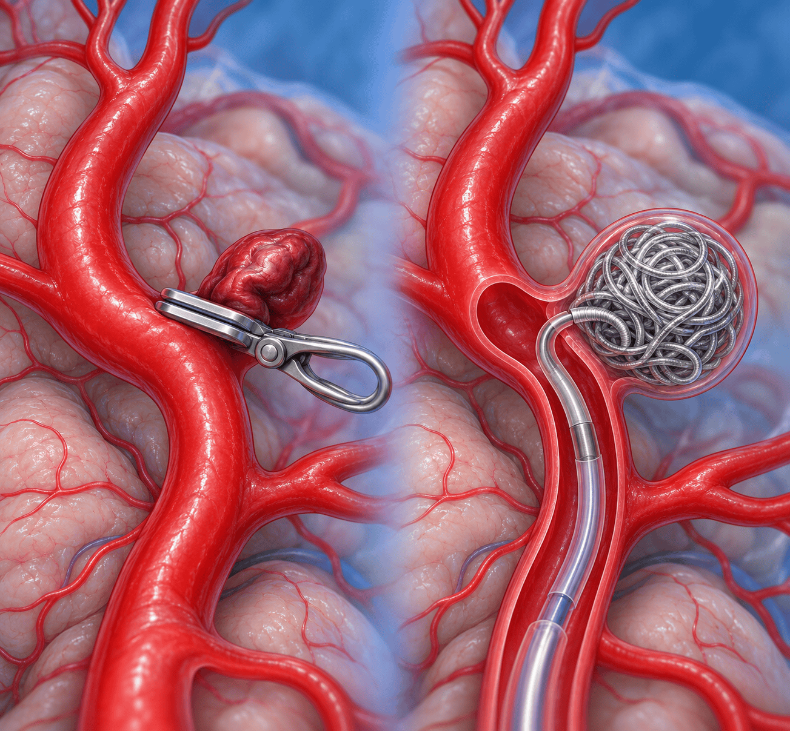

아산 28회 연수강좌 — 검진에서 발견된 뇌동맥류: 어떻게 추적하고 언제 치료할까?(박중철)
16 / 25
CHAPTER 10 · 위험인자 관리
혈압 조절과 금연 지도가 파열 예방의 핵심이다
혈압·금연·생활습관 등 교정 가능한 위험인자를 통합 관리하는 것이 내과 의사의 역할
목표 혈압
외래 기준 수축기 130, 이완기 80 mmHg 미만 유지를 목표로 적극 관리해 혈관벽 스트레스를 최소화한다.
금연 지원
담배를 계속 피우면 동맥류가 터질 확률이 2배 이상 올라간다고 경고하고, 금연 상담·니코틴 대체요법을 적극 권고한다.
절주·생활습관
과음 제한 등 교정 가능한 생활습관을 적극 관리한다. 코카인 사용·가족력도 위험 요인이다.
2배↑
고혈압은 동맥류 파열 위험을 2배 이상 증가시킨다 — 철저한 혈압 조절과 강력한 금연 지도가 파열 예방의 핵심
연자 Q&A
홈 BP 135/85 이상, 병원 혈압 140/90 이상이 잦을 때 혈압약을 증량해도 되는지
연수강좌 질의응답에서 연자는 “고혈압은 뇌동맥류의 생성·파열·치료 후 재발에 모두 관여하는 인자이며 뇌동맥류가 고혈압의 원인은 아니므로, 적극적으로 혈압을 조절하는 것이 중요하다”고 답했습니다.
내과 의사의 역할 · 상당수 뇌동맥류는 치료가 필요 없고, 파열 예방의 출발점은 교정 가능한 위험인자 관리다
아산 28회 연수강좌 — 검진에서 발견된 뇌동맥류: 어떻게 추적하고 언제 치료할까?(박중철)
17 / 25
CHAPTER 11 · 치료
클리핑 vs. 코일색전술 — 동맥류 특성에 따라 선택한다
국내뿐 아니라 미국·유럽에서도 코일색전술 비율이 70~80% 이상이며 스텐트 보조 코일색전술이 보편화되었다

클리핑(좌)과 코일색전술(우) 비교 모식도
외과적 클리핑
완전 폐색률·내구성 우수
침습적 개두술이 필요
혈관내 코일색전술
저침습·빠른 회복
재개통(재발)이 다소 높음
70%↑
국내 뇌동맥류 치료 중 코일색전술 비율
ISAT
코일색전술이 단기 예후 우수(Lancet 2002). 현재는 위치·모양별 다학제 접근
치료 전 절차
다학제 논의·환자 동의 필수. 급여는 크기·위치·증상 유무 반영
선택 · 신경외과 안에서도 장단점과 환자의 위치·크기를 논의하는 다학제적 결정이 필수다
아산 28회 연수강좌 — 검진에서 발견된 뇌동맥류: 어떻게 추적하고 언제 치료할까?(박중철)
18 / 25
CHAPTER 11 · 치료
치료 후 합병증 주의와 지속적인 추적
치료 후에도 정기적 추적과 위험인자 관리가 필요하다
스텐트 보조 코일색전술과 이중 항혈소판요법(DAPT)
스텐트 삽입 시 혈전 예방을 위해 aspirin + clopidogrel을 통상 3~6개월 병용한다. 이 기간에는 aspirin 단독 또는 비투여보다 출혈 위험이 2배 가까이 증가한다(ASA 단독 연 1.3% → 병용 연 2.4%).
임상 주의
드물게 뇌출혈(ICH)이 발생할 수 있어 자발성 뇌출혈과 전신 출혈 경향을 면밀히 모니터링한다. 시술 후 신경학적 변화가 있으면 즉시 영상 검사를 시행하고 항혈전제를 신중히 조절한다.
장기 관리 · 시술 후에는 장기적이며 정기적인 MRA 추적 검사를 지속적으로 시행한다
아산 28회 연수강좌 — 검진에서 발견된 뇌동맥류: 어떻게 추적하고 언제 치료할까?(박중철)
19 / 25
CHAPTER 12 · 내시경
뇌동맥류와 내시경 — 위험도 기반으로 결정한다
미치료 동맥류(상단)와 코일색전술 후(하단)의 내시경 결정
뇌동맥류가 있다고 모든 내시경이 금기는 아니다
고위험 동맥류는 내시경 전 신경외과 협진이 필요할 수 있으나, 대부분은 금기가 아니며 내시경 등으로 크게 문제 되지 않는다.
저위험 동맥류
소형·저위험 동맥류는 내시경 시술의 금기가 아니다.
고위험 동맥류
대형·증상성은 시술 전 신경외과 협진을 권고한다.
시술 핵심
항혈전제 사용 여부, 혈압 변동 최소화가 중요하다.
항혈소판 기간
코일색전술 후 dual antiplatelet은 통상 3~6개월 유지한다.
위험 비교
중단 시 출혈 위험 vs. 유지 시 혈전 위험을 비교해 시점을 정한다.
고위험 내시경
EMR·ESD는 신경외과·소화기내과 협진 후 결정한다.
결정 · 항혈전제 복용 기간에도 약제 중단 여부는 출혈·혈전 위험의 risk-benefit을 고려한 협진이 필요하다
아산 28회 연수강좌 — 검진에서 발견된 뇌동맥류: 어떻게 추적하고 언제 치료할까?(박중철)
20 / 25
CHAPTER 12 · 내시경
특수 상황 ①②: 수면 내시경과 전신마취 수술
두 상황 모두 파열 위험을 높인다는 근거가 없다
수면 내시경
수면 내시경 자체가 파열을 유발한다는 근거는 없다. 프로포폴·미다졸람 진정제는 혈압을 낮추거나 안정적으로 유지하는 방향으로 작용한다.
실제 위험 요인
시술 자체보다 구역반사·기침·Valsalva에 의한 급격한 혈압 상승이다. 혈압 모니터링과 진정 깊이 관리 시 내시경을 진행할 수 있다는 것이 임상 consensus다.
전신마취 수술
비동맥류 수술 627명 체계적 문헌고찰(Kikuta et al.)에서 전신마취 중 비파열 동맥류 파열률은 0.16%, 파열로 인한 사망은 없었다(0%). 특정 마취 기법·수술 종류가 위험을 높인다는 근거는 없다.
관리 시점과 예방적 치료
마취 유도·회복 시 혈압이 급변하는 구간이 핵심 관리 대상이다. 이중 항혈소판제 기간 때문에 수술이 늦춰질 수 있어 수술 전 예방적 동맥류 치료는 권고되지 않는다.
공통 · 마취 유도·회복, 구역반사·기침 등 혈압이 급변하는 순간을 관리하는 것이 핵심이다
아산 28회 연수강좌 — 검진에서 발견된 뇌동맥류: 어떻게 추적하고 언제 치료할까?(박중철)
21 / 25
CHAPTER 12 · 내시경
특수 상황 ③ 임신, 그리고 세 상황의 비교
임신은 파열 위험을 높이는 생리적 변화를 동반하지만 파열률은 크게 높아지지 않는다
임신 중 변화와 분만기
혈액량 +40~50%, 심박출량 증가, 혈압 변동성 증가로 동맥류 벽의 hemodynamic stress가 높아진다. 전체 임부 중 뇌동맥류 파열률은 0.01~0.05%로 드물지만 모성 사망의 주요 원인 중 하나이며, 일반 상황보다 크게 높아지지는 않는 것으로 보고된다. 자연분만 시 Valsalva로 두개내압·혈압이 일시적으로 급상승할 수 있다.
치료 고려와 협진
≥7mm·PCoA 등 고위험은 치료를 고려하며 AHA/ASA는 개별화 접근을 권고한다. 신경외과·산부인과 다학제 협진이 필수다.
상황
파열 위험 증가 근거
핵심 관리 포인트
수면 내시경
근거 없음 (매우 낮음)
혈압 모니터링, 진정 깊이 관리
전신마취 수술
매우 낮음 (~0.16%)
마취 유도·회복 시 혈압 안정
임신
생리적 위험 증가
크기·위치 기반 개별화, 다학제 협진
공통 핵심
세 가지 상황 모두 혈압·혈역학 안정이 관리의 공통 핵심이다.
요약 · 내시경·전신마취·임신 모두 혈압·혈역학 안정이 공통 핵심이며, 임신은 크기·위치 기반의 개별화가 필요하다
아산 28회 연수강좌 — 검진에서 발견된 뇌동맥류: 어떻게 추적하고 언제 치료할까?(박중철)
22 / 25
CHAPTER 13 · 연자 Q&A
연수강좌 질의응답 ① 운동 · 위치 · 의뢰 기준
아래 내용은 연자가 질의응답에서 밝힌 답변이다
연자 Q&A
운동 제한
3mm 동맥류가 우연히 발견된 경우 헬스·무게 드는 운동을 해도 되는지
연수강좌 질의응답에서 연자는 “연간 파열 확률은 0.36% 정도로 매우 낮고 운동·스트레스 상황에서의 추가 파열 위험성은 보고되지 않았으며, 무게를 드는 운동을 포함해 제한하는 운동은 없다”고 답했습니다.
연자 Q&A
내경동맥 해면정맥동 분절 동맥류
양측 해면정맥동 분절 ICA 1.5mm·3.6mm — 바로 신경외과 진료 vs. 1년 후 MRA
연자는 “ICA non-branching site 동맥류는 파열 위험이 낮게 보고되나 크기만으로 정할 수 없으므로, 우선 신경외과 진료 후 저위험이면 강의록대로 추적하며 크기 변화를 확인하라”고 답했습니다.
연자 Q&A
전방순환 안의 위험 차이
ACoA가 PCoA보다 파열 위험이 다소 높아 보이는데, 위치·모양별 차이가 있는지
연자는 “ACoA·PCoA는 다른 부위보다 파열 위험이 약간 높아 유의 깊게 관찰해야 하며, 환자 나이·모양 등을 종합해 치료 또는 추적관찰을 결정한다”고 답했습니다.
연자 Q&A
신경외과 의뢰 기준
검진센터에서 추적 관찰로 충분한 경우와 의뢰할 경우를 구분하는 기준
연자는 “크기·모양·위치·환자 요인을 복합적으로 봐야 하므로 일단 신경외과 외래에서 위험도를 확인하고, 저위험 경과 관찰이면 검진센터에서 정기 추적하며 변화가 없으면 유지한다”고 답했습니다.
연자 Q&A · 질의응답 모음집 155~156쪽 — 연자 개인의 답변이며 표준 진료 지침으로 일반화하지 않는다
아산 28회 연수강좌 — 검진에서 발견된 뇌동맥류: 어떻게 추적하고 언제 치료할까?(박중철)
23 / 25
CHAPTER 13 · 연자 Q&A
연수강좌 질의응답 ② 항혈전제 · 급여
아래 내용은 연자가 질의응답에서 밝힌 답변이다
연자 Q&A
스텐트 시술 후 항혈소판제
시술 후 항혈소판제를 평생 쓰는지, 항응고제 병용 시 출혈 위험은
연자는 “스텐트 보조 코일색전술은 DAPT(통상 aspirin + Plavix)를 3~6개월(병원마다 차이, 아산병원은 3개월) 시행하고, 이후 1년~1년 반 정도 aspirin 단독요법을 한다. 허혈성 뇌졸중 위험인자가 있는 고령 환자는 이후에도 aspirin을 유지하기도 한다. 항응고제 사용 환자에서 시술 전 5~10일부터 이 프로토콜로 병용한 국내 다기관 연구는 출혈·허혈 위험에 유의한 차이가 없다고 보고했다”고 답했습니다.
연자 Q&A
저위험 동맥류와 항혈전제
관찰 중 환자가 내과 질환으로 항혈소판제·항응고제가 필요할 때
연자는 “항혈소판제·항응고제가 뇌동맥류 파열 위험을 높이지는 않는다. 파열 시 출혈이 더 많을 수는 있으나 사용을 금기하지 않는다”고 답했습니다.
연자 Q&A
추적 MRA의 급여
가족력 선별 MRA나 소형 동맥류 추적 MRA를 급여로 하는지
연자는 “가족력이 있는 선별은 외래 기록 등에 이유를 명기하고, 이미 진단받은 경우 강의록의 기간으로 추적할 때 모두 급여로 시행하고 있다”고 답했습니다.
연자 Q&A · 질의응답 모음집 155~156쪽 — 병원별 프로토콜 차이가 있다고 연자가 언급한 부분은 해당 병원 기준이다
아산 28회 연수강좌 — 검진에서 발견된 뇌동맥류: 어떻게 추적하고 언제 치료할까?(박중철)
24 / 25
CHAPTER 14 · 핵심 복습
내과 의사가 진료실로 가져갈 세 가지
뇌동맥류는 흔하지만 대부분 치료보다 관찰이 우선이며, 핵심은 위험도에 따른 개별화된 추적과 내과적 관리다
① 시한폭탄이 아니다
검진에서 우연히 발견된 소형 무증상 뇌동맥류는 시한폭탄이 아니다. 대다수는 정기 MRA 추적만으로 평생 안전하게 지낼 수 있다(추적 관찰 대상: 크기 <5~7mm + anterior circulation + 무증상).
② 혈압 조절 + 금연
철저한 혈압 조절과 금연 지도가 어떤 수술·시술보다 환자를 파열로부터 지키는 핵심이다.
③ 내시경 전 확인
막연히 거부하지 말고 동맥류 크기·치료 여부를 확인한다. 크거나 항혈소판제 복용 중인 시술 후 환자는 신경외과·소화기내과와 협진해 결정한다.
광교바른내과
소화기내과 · 일반내과 · 5대암 검진 평일 08:30~18:30 · 토 08:30~13:30 경기도 용인시 수지구 광교중앙로 298, 4층 402-404호 031-893-4560
다시 보기 QR
한 줄 요약 · 치료 필요 여부는 신경외과 협진을 통한 개별화 결정이며, 내과는 혈압·금연 관리와 내시경 전 확인을 맡는다
아산 28회 연수강좌 — 검진에서 발견된 뇌동맥류: 어떻게 추적하고 언제 치료할까?(박중철)